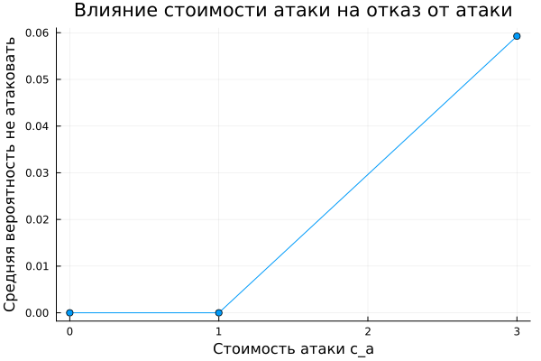
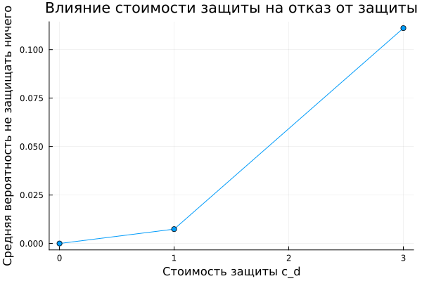
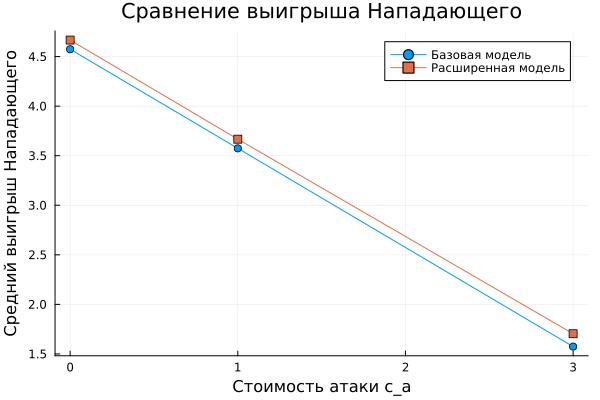

Методы математического моделирования в кибербезопасности. Практикум
Коняева Марина Александровна
НФИмд-01-25
Студ. билет: 1032259383
2026
Освоить применение теории игр для анализа противостояния в сфере информационной безопасности. Научиться строить матричную игру, находить равновесие Нэша в чистых и смешанных стратегиях.
Игроки:
Ожидаемые выигрыши:
Равновесие Нэша:
Реализованы функции:
Результат:
results.csv;Создан файл:
scripts/run_sims.jlВыполнен расчёт всех комбинаций параметров:
Всего строк


Добавлены новые стратегии:
Нападающий:
Защитник:
Размерность игры:

Рост стоимости атаки повышает вероятность выбора стратегии «Не атаковать».

Рост стоимости защиты увеличивает вероятность выбора стратегии «Не защищать ничего».

Расширенная модель позволяет отказаться от невыгодных действий, поэтому демонстрирует более реалистичное поведение игроков.
Рассмотрены:
В ходе работы реализована модель конфликта «Защитник–Нападающий», выполнён поиск равновесий Нэша и проведено исследование влияния параметров модели на поведение игроков.
Дополнительно реализована расширенная версия игры с возможностью отказа от атаки и защиты. Полученные результаты показали, что новые стратегии делают модель более реалистичной и позволяют учитывать экономическую целесообразность действий сторон.